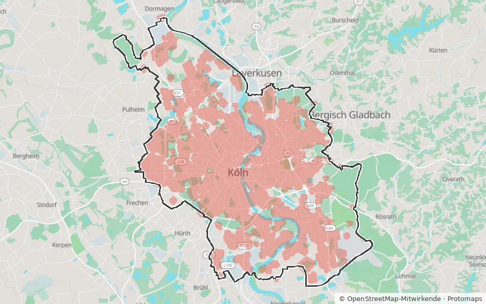
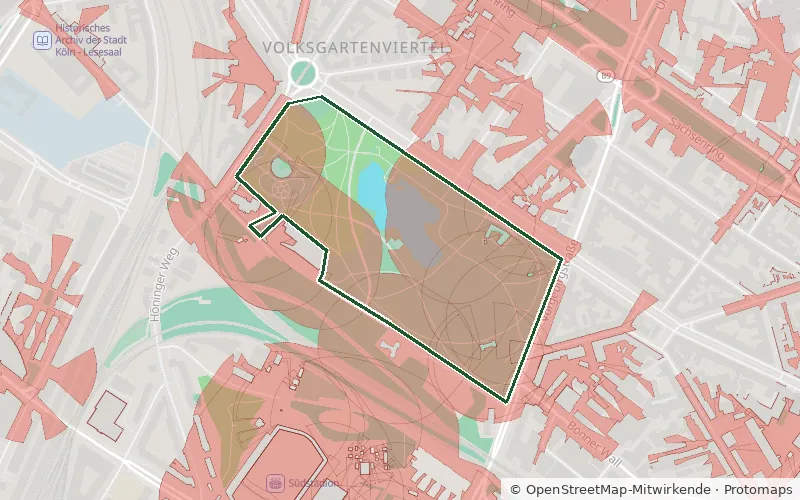
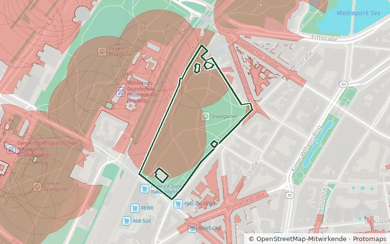
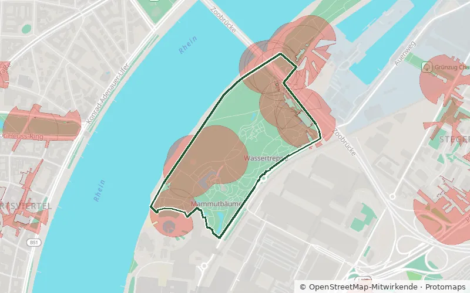
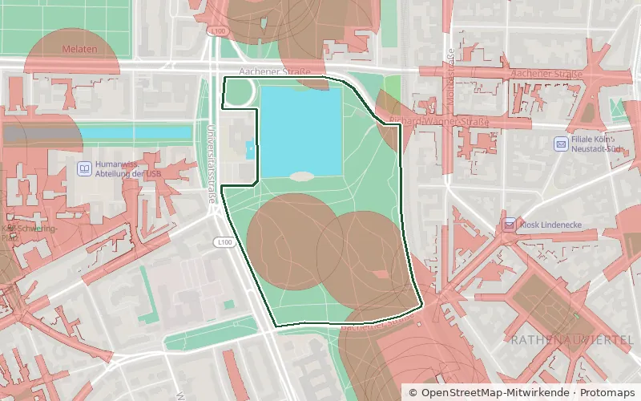
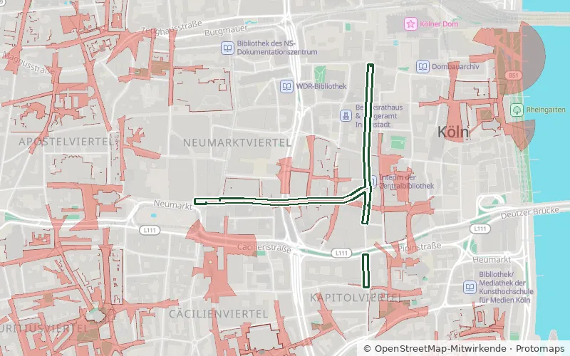
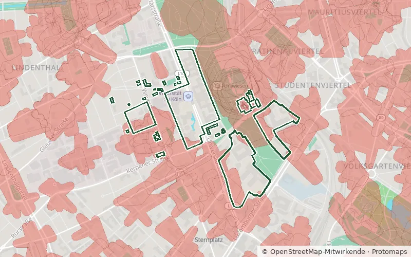

In Köln ist öffentliches Kiffen auf 71 km² verboten, das sind 17,6 % der Stadtfläche von 405 km². Grund sind 4 443 Einrichtungen, in deren Sichtweite nach § 5 KCanG nicht konsumiert werden darf, vor allem Sportstätten und Spielplätze. Sichtweite heißt: höchstens 100 Meter vom Eingangsbereich, und nur dort, wo kein Gebäude die Sicht verdeckt. Dazu kommen die Fußgängerzonen, in denen zwischen 7 und 20 Uhr nicht konsumiert werden darf, und überall die unmittelbare Gegenwart von Kindern und Jugendlichen.

Woher die Zonen kommen
| Einrichtung | Anzahl | Zonenfläche |
|---|---|---|
| Schulen | 378 | 15,0 km² |
| Kitas und Kindergärten | 576 | 12,3 km² |
| Spielplätze | 1 567 | 23,3 km² |
| Kinder- und Jugendeinrichtungen | 90 | 1,7 km² |
| Sportstätten | 1 832 | 36,8 km² |
Die Spalte rechts zählt jede Art für sich; weil sich Zonen verschiedener Einrichtungen überlappen, ist ihre Summe größer als die 71 km² oben. Den größten Teil machen die 1 832 Sportstätten aus, von Bolzplätzen über Turnhallen bis zu Fitnessstudios, gefolgt von 1 567 Spielplätzen.
Auf den Spiel- und Bolzplätzen selbst verbietet die Kölner Stadtordnung Cannabis seit Ende 2024 zusätzlich, ganz gleich, ob Kinder da sind; das kostet bis zu 1.000 Euro, und die Plätze sind ohnehin nur von 7 bis 22 Uhr offen (Kölner Stadtordnung, § 25).
Anbauvereinigungen fehlen in der Tabelle: Erlaubnisse erteilt die Bezirksregierung Köln, eine Zahl oder Liste für die Stadt hat sie nicht veröffentlicht (Bezirksregierung Köln).
Parks und Grüngürtel
Im Volksgarten in der Südstadt liegen 84 % der Fläche in einer Zone: Vier Spielplätze und zwei Sportanlagen liegen im Park, Schulen und Kitas am Rand. Ähnlich der Stadtgarten im Belgischen Viertel mit 70 %; dort bilden vor allem Schulen, Kitas und Sportstätten rund um den Park die Zonen.


Im Rheinpark in Deutz sind es 56 %, wegen eines Spielplatzes und mehrerer Sportanlagen samt Minigolf. Der Hiroshima-Nagasaki-Park am Aachener Weiher kommt auf 42 %; ein Spielplatz und eine Sportanlage liegen im Park, Kitas und Sportplätze am Rand.


Der Äußere Grüngürtel liegt zu 19 % in einer Zone, der Königsforst im Osten fast gar nicht (0 %). Auf einem 100 Meter breiten Streifen Land entlang des Rheins sind es 12 %.
Innenstadt und Plätze
Eine amtliche Gesamtliste der Kölner Fußgängerzonen haben wir nicht gefunden. Die Stadt nennt die Hohe Straße seit 1967 Fußgängerstraße, und ihr Faltblatt zum Radfahren in den Fußgängerzonen der City zeigt unter anderem Hohe Straße, Schildergasse, Ehrenstraße, Breite Straße, Alter Markt und Roncalliplatz (Stadt Köln, Oktober 2025). 2025 hat sie außerdem die Straßen um den Alter Markt und große Teile des Eigelsteins auf Fuß- und Radverkehr beschränkt (Altstadt, Eigelstein). Dort gilt zwischen 7 und 20 Uhr Konsumverbot, ganz gleich, was die Karte rot zeigt; blau zeigt die Karte die Fußgängerbereiche, wie sie in OpenStreetMap eingetragen sind.
Von Hohe Straße und Schildergasse liegen außerdem 46 % in einer Sichtweiten-Zone, vom Alter Markt 82 %, vom Roncalliplatz am Dom 0 %.

Auf dem Brüsseler Platz sind es 61 %; dort gilt außerdem von 21 bis 6 Uhr ein Alkoholverbot, zu Cannabis sagt es nichts (Stadt Köln). Der Ebertplatz liegt fast ganz in einer Zone (100 %), Neumarkt und Rudolfplatz fast gar nicht (2 % und 0 %).
Hochschulen
Hochschulen sind nach § 5 KCanG keine Verbotsorte. Der Hauptcampus der Universität zu Köln liegt zu 10 % in einer Zone; Sportanlagen, Schulen und Kitas liegen vor allem am Rand. Die Deutsche Sporthochschule kommt auf 57 %. Die Hausordnungen von Universität und TH Köln verbieten das Rauchen in Gebäuden; zu Cannabis sagen sie nichts (Hausordnung der Universität).

Karneval und andere Feste
Die Allgemeinverfügungen der Stadt zu Karneval und zum 11. November regeln Glas, Drohnen und Zugänge, Cannabis nicht (Stadt Köln, November 2026). Weil an diesen Tagen viele Minderjährige feiern, greift aber das Verbot in ihrer Gegenwart (§ 5 Abs. 1 KCanG); die Stadt zählte am 11. November 2025 Hunderte Verstöße gegen den Jugendschutz (Stadt Köln). Für Volksfeste und ähnliche Großveranstaltungen sind die Veranstalter nach einem Erlass des Landes verpflichtet, Verstöße zu verhindern, notfalls mit einem generellen Konsumverbot (Erlass des Gesundheitsministeriums, Mai 2024). Die Weihnachtsmärkte am Dom und auf dem Alter Markt liegen in der Fußgängerzone. Im RheinEnergieStadion verbietet die Stadionordnung, Cannabis mitzubringen, und bei Spielen des 1. FC Köln das Kiffen auf den Tribünen (Stadionordnung).
Was sonst noch gilt
Ein Verstoß gegen § 5 Abs. 2 kostet in Nordrhein-Westfalen 50 bis 500 Euro, in Gegenwart von Minderjährigen 300 bis 1.000 Euro (Land NRW); zuständig ist die Stadt. Bei Kontrollen auf Spiel- und Bolzplätzen in den Osterferien 2025 traf das Ordnungsamt acht kiffende Personen an, bei 1.322 Kontrollen (Stadt Köln). Eigene Verbotszonen für Cannabis über die Spielplätze hinaus hat Köln nicht (Stand 26. November 2026).
Häufige Fragen
Wo darf man in Köln kiffen?
Außerhalb der roten Flächen, außerhalb der Fußgängerzonen zwischen 7 und 20 Uhr, nicht auf Spiel- und Bolzplätzen, nicht in Gegenwart von Kindern und Jugendlichen und nicht dort, wo ein Hausrecht es verbietet. Eine weiße Fläche auf der Karte heißt nicht, dass Konsum dort erlaubt ist: Die Karte kennt weder Hecken noch Bäume, die die Sicht nehmen, noch Einrichtungen, die in OpenStreetMap fehlen.
Darf man an Karneval kiffen?
Wo Kinder und Jugendliche mitfeiern, nein, und das ist an Karneval fast überall. In den Fußgängerzonen der Altstadt gilt außerdem bis 20 Uhr das Verbot für Fußgängerzonen. Die Glasverbote der Stadt regeln Cannabis nicht.
Wie genau ist das?
Die Zonen sind aus OpenStreetMap berechnet, mit Gebäuden als Sichthindernis, und werden täglich neu gerechnet; die Zahlen auf dieser Seite sind vom 26. November 2026. Die Karte ist eine Orientierungshilfe, keine Rechtsauskunft. Wie gerechnet wird und wo die Grenzen liegen, steht auf der Über-Seite.
Fehlt eine Einrichtung oder ist eine falsch eingetragen? Korrekturen in OpenStreetMap erscheinen am Tag darauf auf der Karte; nur eintragen, was es vor Ort wirklich gibt.